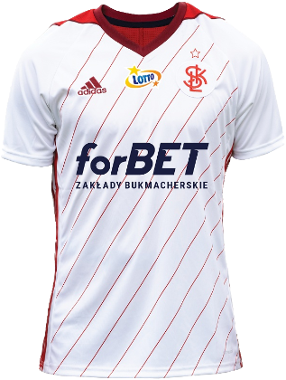
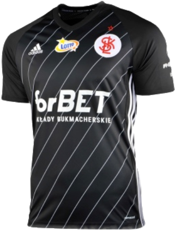

Najnowsze Informacje

ŁKS ŁÓDŹ


Informacje o klubie:
- ŁKS Łódź Spółka Akcyjna
- Rok założenia: 1908
- Adres: Aleja Unii Lubelskiej 2, 94-020 Łódź
- Stadion: Stadion Miejski - pojemność - 5 700 miejsc
- Prezes: Tomasz Salski
- Trener: Kazimierz Moskal (od 13 czerwca 2018)


Napastnicy
Pomocnicy
Obrońcy
Bramkarze
Fanatics Zone
ZGODY
GKS Tychy
Lech Poznań
Zawisza Bydgoszcz
KOSY
Widzew Łódź
Legia Warszawa
Ruch Chorzów
Arka Gdynia
Zagłębie Lubin
Stomil Olsztyn
Stal Rzeszów
Elana Toruń